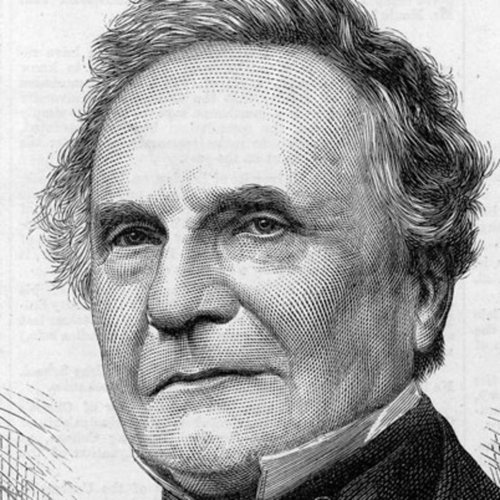

DomashkaPoElectivu

- Работы Дж. Фон Неймана по теории вычислительных машин
- История создания и развития ЭВМ. Поколения
- Микропроцессоры, история создания, миспользование в современном мире
- Cупер-ЭВМ назначение, возможности, принципы построения
- Проект 5-го поколения: замысел и реальность
- Основные правила компьютерной безопасности
В данной статье описаны основные этапы развития компьютеров. Описаны основные направления развития компьютерных технологий и причины их этого развития.
Основные этапы развития компьютеров
В ходе эволюции компьютерных технологий были разработаны сотни разных компьютеров. Многие из них давно забыты, в то время как влияние других на современные идеи оказалось весьма значительным. В этой статье мы дадим краткий обзор некоторых ключевых исторических моментов, чтобы лучше понять, каким образом разработчики дошли до концепции современных компьютеров. Мы рассмотрим только основные моменты развития, оставив многие подробности за скобками. Компьютеры, которые мы будем рассматривать, представлены в таблице ниже.
| Год выпуска | Название компьютера | Создатель | Примечания |
|---|---|---|---|
| 1834 | Аналитическая машина | Бэббидж | Первая попытка построить цифровой компьютер |
| 1936 | Z1 | Зус | Первая релейная вычислительная машина |
| 1943 | COLOSSUS | Британское правительство | Первый электронный компьютер |
| 1944 | Mark I | Айкен | Первый американский многоцелевой компьютер |
| 1946 | ENIAC I | Экерт/Моушли | С этой машины начинается история современных компьютеров |
| 1949 | EDSAC | Уилкс | Первый компьютер с программами, хранящимися в памяти |
| 1951 | Whirlwind I | МТИ | Первый компьютер реального времени |
| 1952 | IAS | Фон Нейман | Этот проект используется в большинстве современных компьютеров |
| 1960 | PDP-1 | DEC | Первый мини-компьютер (продано 50 экземпляров) |
| 1961 | 1401 | IBM | Очень популярный маленький компьютер |
| 1962 | 7094 | IBM | Очень популярная небольшая вычислительная машина |
| 1963 | В5000 | Burroughs | Первая машина, разработанная для языка высокого уровня |
| 1964 | 360 | IBM | Первое семейство компьютеров |
| 1964 | 6600 | CDC | Первый суперкомпьютер для научных расчетов |
| 1965 | PDP-8 | DEC | Первый мини-компьютер массового потребления (продано 50 000 экземпляров) |
| 1970 | PDP-11 | DEC | Эти мини-компьютеры доминировали на компьютерном рынке в 70-е годы |
| 1974 | 8080 | Intel | Первый универсальный 8-разрядный компьютер на микросхеме |
| 1974 | CRAY-1 | Cray | Первый векторный суперкомпьютер |
| 1978 | VAX | DEC | Первый 32-разрядный суперминикомпьютер |
| 1981 | IBM PC | IBM | Началась эра современных персональных компьютеров |
| 1981 | Osbome-1 | Osborne | Первый портативный компьютер |
| 1983 | Lisa | Apple | Первый ПК с графическим пользовательским интерфейсом |
| 1985 | 386 | Intel | Первый 32-разрядный предшественник линейки Pentium |
| 1985 | MIPS | MIPS | Первый компьютер RISC |
| 1987 | SPARC | Sun | Первая рабочая станция RISC на основе процессора SPARC |
| 1990 | RS6000 | IBM | Первый суперскалярный компьютер |
| 1992 | Alpha | DEC | Первый 64-разрядный ПК |
| 1993 | Newton | Apple | Первый карманный компьютер |
Всего из истории можно выделить 6 этапов развития компьютеров: поколение механических компьютеров, компьютеры на электронных лампах (такие, как ENIAC), транзисторные компьютеры (IBM 7094), первые компьютеры на интегральных схемах (IBM 360), персональные компьютеры (линейки с ЦП Intel) и, так называемые, невидимые компьютеры.
Нулевое поколение — механические компьютеры (1642-1945)
Первым человеком, создавшим счетную машину, был французский ученый Блез Паскаль (1623-1662), в честь которого назван один из языков программирования. Паскаль сконструировал эту машину в 1642 году, когда ему было всего 19 лет, для своего отца, сборщика налогов. Это была механическая конструкция с шестеренками и ручным приводом. Счетная машина Паскаля могла выполнять только операции сложения и вычитания.
Тридцать лет спустя великий немецкий математик Готфрид Вильгельм Лейбниц (1646-1716) построил другую механическую машину, которая помимо сложения и вычитания могла выполнять операции умножения и деления. В сущности, Лейбниц три века назад создал подобие карманного калькулятора с четырьмя функциями.
Еще через 150 лет профессор математики Кембриджского Университета, Чарльз Бэббидж (1792-1871), изобретатель спидометра, разработал и сконструировал разностную машину. Эта механическая машина, которая, как и машина Паскаля, могла лишь складывать и вычитать, подсчитывала таблицы чисел для морской навигации. В машину был заложен только один алгоритм — метод конечных разностей с использованием полиномов. У этой машины был довольно интересный способ вывода информации: результаты выдавливались стальным штампом на медной дощечке, что предвосхитило более поздние средства ввода-вывода — перфокарты и компакт-диски.
Чарльз Бэббидж
разностная машина
Хотя его устройство работало довольно неплохо, Бэббиджу вскоре наскучила машина, выполнявшая только один алгоритм. Он потратил очень много времени, большую часть своего семейного состояния и еще 17 000 фунтов, выделенных правительством, на разработку аналитической машины. У аналитической машины было 4 компонента: запоминающее устройство (память), вычислительное устройство, устройство ввода (для считывания перфокарт), устройство вывода (перфоратор и печатающее устройство). Память состояла из 1000 слов по 50 десятичных разрядов; каждое из слов содержало переменные и результаты. Вычислительное устройство принимало операнды из памяти, затем выполняло операции сложения, вычитания, умножения или деления и возвращало полученный результат обратно в память. Как и разностная машина, это устройство было механическим.
Преимущество аналитической машины заключалось в том, что она могла выполнять разные задания. Она считывала команды с перфокарт и выполняла их. Некоторые команды приказывали машине взять 2 числа из памяти, перенести их в вычислительное устройство, выполнить над ними операцию (например, сложить) и отправить результат обратно в запоминающее устройство. Другие команды проверяли число, а иногда совершали операцию перехода в зависимости от того, положительное оно или отрицательное. Если в считывающее устройство вводились перфокарты с другой программой, то машина выполняла другой набор операций. То есть в отличие от разностной аналитическая машина могла выполнять несколько алгоритмов.
Поскольку аналитическая машина программировалась на элементарном ассемблере, ей было необходимо программное обеспечение. Чтобы создать это программное обеспечение, Бэббидж нанял молодую женщину — Аду Августу Ловлейс (Ada Augusta Lovelace), дочь знаменитого британского поэта Байрона. Ада Ловлейс была первым в мире программистом. В ее честь назван современный язык программирования — Ada.
К несчастью, подобно многим современным инженерам, Бэббидж никогда не отлаживал компьютер. Ему нужны были тысячи и тысячи шестеренок, сделанных с такой точностью, которая в XIX веке была недоступна. Но идеи Бэббиджа опередили его эпоху, и даже сегодня большинство современных компьютеров по конструкции сходны с аналитической машиной. Поэтому справедливо будет сказать, что Бэббидж был дедушкой современного цифрового компьютера.
В конце 30-х годов немец Конрад Зус (Konrad Zuse) сконструировал несколько автоматических счетных машин с использованием электромагнитных реле. Ему не удалось получить денежные средства от правительства на свои разработки, потому что началась война. Зус ничего не знал о работе Бэббиджа, его машины были уничтожены во время бомбежки Берлина в 1944 году, поэтому его работа никак не повлияла на будущее развитие компьютерной техники. Однако он был одним из пионеров в этой области.
Немного позже счетные машины были сконструированы в Америке. Машина Джона Атанасова (John Atanasoff) была чрезвычайно развитой для того времени. В ней использовалась бинарная арифметика и информационные емкости, которые периодически обновлялись, чтобы избежать уничтожения данных. Современная динамическая память (ОЗУ) работает по точно такому же принципу. К несчастью, эта машина так и не стала действующей. В каком-то смысле Атанасов был похож на Бэббиджа — мечтатель, которого не устраивали технологии своего времени.
Компьютер Джорджа Стибитса (George Stibbitz) действительно работал, хотя и был примитивнее, чем машина Атанасова. Стибитс продемонстрировал свою машину на конференции в Дартмутском колледже в 1940 году. На этой конференции присутствовал Джон Моушли (John Mauchley), ничем не примечательный на тот момент профессор физики из университета Пенсильвании. Позднее он стал очень известным в области компьютерных разработок.
Пока Зус, Стибитс и Атанасов разрабатывали автоматические счетные машины, молодой Говард Айкен (Howard Aiken) в Гарварде упорно проектировал ручные счетные машины в рамках докторской диссертации. После окончания исследования Айкен осознал важность автоматических вычислений. Он пошел в библиотеку, прочитал о работе Бэббиджа и решил создать из реле такой же компьютер, который Бэббиджу не удалось создать из зубчатых колес.
Работа над первым компьютером Айкена «Mark I» была закончена в 1944 году. Компьютер имел 72 слова по 23 десятичных разряда каждое и мог выполнить любую команду за 6 секунд. В устройствах ввода-вывода использовалась перфолента. К тому времени, как Айкен закончил работу над компьютером «Mark II», релейные компьютеры уже устарели. Началась эра электроники.
Первое поколение — электронные лампы (1945-1955)
Стимулом к созданию электронного компьютера стала Вторая мировая война. В начале войны германские подводные лодки разрушали британские корабли. Германские адмиралы посылали на подводные лодки по радио команды, и хотя англичане могли перехватывать эти команды, проблема была в том, что радиограммы были закодированы с помощью прибора под названием ENIGMA, предшественник которого был спроектирован изобретателем-дилетантом и бывшим президентом США Томасом Джефферсоном.
В начале войны англичанам удалось приобрести ENIGMA у поляков, которые, в свою очередь, украли ее у немцев. Однако, чтобы расшифровать закодированное послание, требовалось огромное количество вычислений, и их нужно было произвести сразу после перехвата радиограммы. Поэтому британское правительство основало секретную лабораторию для создания электронного компьютера под названием COLOSSUS. В создании этой машины принимал участие знаменитый британский математик Алан Тьюринг. COLOSSUS работал уже в 1943 году, но, так как британское правительство полностью контролировало этот проект и рассматривало его как военную тайну на протяжении 30 лет, COLOSSUS не стал базой для дальнейшего развития компьютеров. Мы упомянули о нем только потому, что это был первый в мире электронный цифровой компьютер.
Вторая мировая война повлияла на развитие компьютерной техники и в США. Армии нужны были таблицы, которые использовались при нацеливании тяжелой артиллерии. Сотни женщин нанимались для расчетов на ручных счетных машинах и заполнения полей этих таблиц (считалось, что женщины аккуратнее в расчетах, чем мужчины). Тем не менее этот процесс требовал много времени, и часто случались ошибки.
Джон Моушли, который был знаком с работами Атанасова и Стибблитса, понимал, что армия заинтересована в счетных машинах. Он потребовал от армии финансирования работ по созданию электронного компьютера. Требование было удовлетворено в 1943 году, и Моушли со своим студентом Дж. Преспером Экертом (J. Presper Eckert) начали конструировать электронный компьютер, который они назвали ENIAC (Electronic Numerical Integrator and Computer — электронный цифровой интегратор и калькулятор). ENIAC состоял из 18 000 электровакуумных ламп и 1500 реле, весил 30 тонн и потреблял 140 киловатт электроэнергии. У машины было 20 регистров, каждый из которых мог содержать 10-разрядное десятичное число. (Десятичный регистр — это память очень маленького объема, которая может вмещать число до какого-либо определенного максимального количества разрядов, что-то вроде одометра, запоминающего километраж пройденного автомобилем пути.) В ENIAC было установлено 6000 многоканальных переключателей и имелось множество кабелей, протянутых к разъемам.
Работа над машиной была закончена в 1946 году, когда она уже была не нужной — по крайней мере, для достижения первоначально поставленных целей.
Поскольку война закончилась, Моушли и Экерту позволили организовать школу, где они рассказывали о своей работе коллегам-ученым. В этой школе и зародился интерес к созданию больших цифровых компьютеров.
После появления школы за конструирование электронных вычислительных машин взялись другие исследователи. Первым рабочим компьютером был EDSAC (1949 год). Эту машину сконструировал Морис Уилкс в Кембриджском университете. Далее — JOHNIAC в корпорации Rand, ILLIAC в Университете Иллинойса, MANIAC в лаборатории Лос-Аламоса и WEIZAC в Институте Вайцмана в Израиле.
Экерт и Моушли вскоре начали работу над машиной EDVAC (Electronic Discrete Variable Computer — электронная дискретная параметрическая машина). К несчастью, этот проект закрылся, когда они ушли из университета, чтобы основать компьютерную корпорацию в Филадельфии (Силиконовой долины тогда еще не было). После ряда слияний эта компания превратилась в Unisys Corporation.
Экерт и Моушли хотели получить патент на изобретение цифровой вычислительной машины. После нескольких лет судебной тяжбы было вынесено решение, что патент недействителен, так как цифровую вычислительную машину изобрел Атанасов, хотя он ее и не запатентовал.
В то время как Экерт и Моушли работали над машиной EDVAC, один из участников проекта ENIAC, Джон Фон Нейман, поехал в Институт специальных исследований в Принстоне, чтобы сконструировать собственную версию EDVAC под названием IAS (Immediate Address Storage — память с прямой адресацией). Фон Нейман был гением в тех же областях, что и Леонардо да Винчи. Он знал много языков, был специалистом в физике и математике, обладал феноменальной памятью: он помнил все, что когда-либо слышал, видел или читал. Он мог дословно процитировать по памяти текст книг, которые читал несколько лет назад. Когда фон Нейман стал интересоваться вычислительными машинами, он уже был самым знаменитым математиком в мире.
Фон Нейман вскоре осознал, что создание компьютеров с большим количеством переключателей и кабелей требует длительного времени и очень утомительно. Он пришел к мысли, что программа должна быть представлена в памяти компьютера в цифровой форме, вместе с данными. Он также отметил, что десятичная арифметика, используемая в машине ENIAC, где каждый разряд представлялся десятью электронными лампами A включена и 9 выключены), должна быть заменена параллельной бинарной арифметикой. Между прочим, Атанасов пришел к аналогичному выводу лишь спустя несколько лет.
Основной проект, который фон Нейман описал вначале, известен сейчас как фон-неймановская вычислительная машина. Он был использован в EDSAC, первой машине с программой в памяти, и даже сейчас, более чем полвека спустя, является основой большинства современных цифровых компьютеров. Сам замысел и машина IAS оказали очень большое влияние на дальнейшее развитие компьютерной техники, поэтому стоит кратко описать проект фон Неймана. Стоит иметь в виду, что хоть проект и связан с именем фон Неймана, в его разработке приняли деятельное участие другие ученые — в частности, Голдстайн. Архитектуру этой машины иллюстрирует следующий рисунок:
Схема фон-неймановской вычислительной машины
Машина фон Неймана состояла из пяти основных частей: памяти, арифметико-логического устройства, устройства управления, а также устройств ввода-вывода. Память включала 4096 слов размером по 40 бит, бит — это 0 или 1. Каждое слово содержало или 2 команды по 20 бит, или целое число со знаком на 40 бит. 8 бит указывали на тип команды, а остальные 12 бит определяли одно из 4096 слов. Арифметический блок и блок управления составляли «мозговой центр» компьютера. В современных машинах эти блоки сочетаются в одной микросхеме, называемой центральным процессором (ЦП).
Внутри арифметико-логического устройства находился особый внутренний регистр на 40 бит, так называемый аккумулятор. Типичная команда добавляла слово из памяти в аккумулятор или сохраняла содержимое аккумулятора в памяти. Эта машина не выполняла арифметические операции с плавающей точкой, поскольку Фон Нейман считал, что любой сведущий математик способен держать плавающую точку в голове.
Whirlwind I
Примерно в то же время, когда Фон Нейман работал над машиной IAS, исследователи МТИ разрабатывали свой компьютер Whirlwind I. В отличие от IAS, ENIAC и других машин того же типа со словами большой длины, машина Whirlwind I имела слова по 16 бит и предназначалась для работы в реальном времени. Этот проект привел к изобретению Джеем Форрестером (Jay Forrester) памяти на магнитном сердечнике, а затем и первого серийного мини-компьютера.
В то время IBM была маленькой компанией, производившей перфокарты и механические машины для сортировки перфокарт. Хотя фирма IBM частично финансировала проект Айкена, она не интересовалась компьютерами и только в 1953 году построила компьютер 701, через много лет после того, как компания Экерта и Моушли со своим компьютером UNIVAC стала номером один на компьютерном рынке.
В 701 было 2048 слов по 36 бит, каждое слово содержало две команды. 701 стал первым компьютером, лидирующим на рынке в течение десяти лет. Через три года появился компьютер 704, у которого было 4 Кбайт памяти на магнитных сердечниках, команды по 36 бит и процессор с плавающей точкой. В 1958 году компания IBM начала работу над последним компьютером на электронных лампах, 709, который по сути представлял собой усложненную версию 704.
Второе поколение — транзисторы (1955-1965)
Транзистор был изобретен сотрудниками лаборатории Bell Laboratories Джоном Бардином Oohn Bardeen), Уолтером Браттейном (Walter Brattain) и Уильямом Шокли (William Shockley), за что в 1956 году они получили Нобелевскую премию в области физики. В течение десяти лет транзисторы совершили революцию в производстве компьютеров, и к концу 50-х годов компьютеры на вакуумных лампах уже безнадежно устарели. Первый компьютер на транзисторах был построен в лаборатории МТИ (Массачусетским Техническим Институтом). Он содержал слова из 16 бит, как и Whirlwind I. Компьютер назывался ТХ-0 (Transistorized experimental computer 0 — экспериментальная транзисторная вычислительная машина 0) и предназначался только для тестирования будущей машины ТХ-2.
Машина ТХ-2 не имела большого значения, но один из инженеров этой лаборатории, Кеннет Ольсен (Kenneth Olsen), в 1957 году основал компанию DEC (Digital Equipment Corporation — корпорация по производству цифровой аппаратуры), чтобы производить серийную машину, сходную с ТХ-0. Эта машина, PDP-1, появилась только через четыре года главным образом потому, что те, кто финансировал DEC, считали производство компьютеров невыгодным. Поэтому компания DEC продавала в основном небольшие электронные платы.
Компьютер PDP-1 появился только в 1961 году. Он имел 4096 слов по 18 бит и быстродействие 200 000 команд в секунду. Этот параметр был в два раза меньше, чем у 7090, транзисторного аналога 709. PDP-1 был самым быстрым компьютером в мире в то время. PDP-1 стоил 120 000 долларов, в то время как 7090 стоил миллионы. Компания DEC продала десятки компьютеров PDP-1, и так появилась компьютерная промышленность.
Одну из первых машин модели PDP-1 отдали в МТИ, где она сразу привлекла внимание некоторых молодых исследователей, подающих большие надежды. Одним из нововведений PDP-1 был дисплей размером 512 х 512 пикселов, на котором можно было рисовать точки. Вскоре студенты МТИ составили специальную программу для PDP-1, чтобы играть в «Войну миров» — первую в мире компьютерную игру.
Через несколько лет компания DEC разработала модель PDP-8, 12-разрядный компьютер. PDP-8 стоил гораздо дешевле, чем PDP-1 A6 000 долларов). Главное нововведение — единственная шина (omnibus), показанная на рис. 1.5. Шина — это набор параллельно соединенных проводов для связи компонентов компьютера. Это нововведение радикально отличало PDP-8 от IAS. Такая структура с тех пор стала использоваться во всех компьютерах. Компания DEC продала 50 000 компьютеров модели PDP-8 и стала лидером на рынке мини-компьютеров.
Шина компьютера PDP-8
Как уже отмечалось, с изобретением транзисторов компания IBM построила транзисторную версию 709 — 7090, а позднее — 7094. У этой версии время цикла составляло 2 микросекунды, а память состояла из 32 536 слов по 36 бит. 7090 и 7094 были последними компьютерами типа ENIAC, но они широко использовались для научных расчетов в 60-х годах прошлого века.
Компания IBM выпускала также компьютеры 1401 для коммерческих расчетов. Эта машина могла считывать и записывать магнитные ленты и перфокарты и распечатывать результат так же быстро, как и 7094, но при этом стоила дешевле. Для научных вычислений она не подходила, но зато была очень удобна для ведения деловых записей.
У 1401 не было регистров и фиксированной длины слова. Память содержала 4000 байт по 8 бит (в более поздних моделях объем увеличился до немыслимых в то время 16 000 байт). Каждый байт содержал символ в 6 бит, административный бит и бит для указания конца слова. У команды MOVE, например, есть исходный адрес и адрес пункта назначения. Эта команда перемещает байты из первого адреса во второй, пока бит конца слова не примет значение 1.
В 1964 году компания CDC (Control Data Corporation) выпустила машину 6600, которая работала почти на порядок быстрее, чем 7094. Этот компьютер для сложных расчетов пользовался большой популярностью, и компания CDC пошла «в гору». Секрет столь высокого быстродействия заключался в том, что внутри ЦПУ (центрального процессора) находилась машина с высокой степенью параллелизма. У нее было несколько функциональных устройств для сложения, умножения и деления, и все они могли работать одновременно. Для того чтобы машина быстро работала, требовалось составить хорошую программу, а приложив некоторые усилия, можно было сделать так, чтобы машина выполняла 10 команд одновременно.
Внутри машины 6600 было встроено несколько маленьких компьютеров. Центральный процессор, таким образом, производил только подсчет чисел, а остальные функции (управление работой машины, а также ввод и вывод информации) выполняли маленькие компьютеры. Некоторые принципы работы устройства 6600 используются и в современных компьютерах.
Разработчик компьютера 6600 Сеймур Крей (Seymour Cray) был легендарной личностью, как и фон Нейман. Он посвятил всю свою жизнь созданию очень мощных компьютеров, которые сейчас называют суперкомпьютерами. Среди них можно назвать 6600, 7600 и Сгау-1. Сеймур Крей также является автором известного «алгоритма покупки автомобилей»: вы идете в магазин, ближайший к вашему дому, показываете на машину, ближайшую к двери, и говорите: «Я беру эту». Этот алгоритм позволяет тратить минимум времени на не очень важные дела (покупку автомобилей) и позволяет большую часть времени на важные (разработку суперкомпьютеров).
Следует упомянуть еще один компьютер — Burroughs B5000. Разработчики машин PDP-1, 7094 и 6600 занимались только аппаратным обеспечением, стараясь снизить его стоимость (DEC) или заставить работать быстрее (IBM и CDC). Программное обеспечение не менялось. Производители В5000 пошли другим путем. Они разработали машину с намерением программировать ее на языке Algol 60 (предшественнике языков С и Java), сконструировав аппаратное обеспечение так, чтобы упростить задачу компилятора. Так появилась идея, что при
разработке компьютера нужно также учитывать и программное обеспечение. Но вскоре эта идея была забыта.
Третье поколение — интегральные схемы (1965-1980)
Изобретение в 1958 году Робертом Нойсом (Robert Noyce) кремниевой интегральной схемы означало возможность размещения на одной небольшой микросхеме десятков транзисторов. Компьютеры на интегральных схемах были меньшего размера, работали быстрее и стоили дешевле, чем их предшественники на транзисторах.
К 1964 году компания IBM лидировала на компьютерном рынке, но существовала одна большая проблема: компьютеры 7094 и 1401, которые она выпускала, были несовместимы друг с другом. Один из них предназначался для сложных расчетов, в нем использовалась двоичная арифметика на регистрах по 36 бит, во втором применялась десятичная система счисления и слова разной длины. У многих покупателей были оба этих компьютера, и им не нравилось, что они совершенно несовместимы.
Когда пришло время заменить эти две серии компьютеров, компания IBM сделала решительный шаг. Она выпустила линейку транзисторных компьютеров System/360, которые были предназначены как для научных, так и для коммерческих расчетов. Линейка System/360 имела много нововведений. Это было целое семейство компьютеров для работы с одним языком (ассемблером). Каждая новая модель была больше по возможностям, чем предыдущая. Компания смогла заменить 1401 на 360 (модель 30), а 7094 — на 360 (модель 75). Модель 75 была больше по размеру, работала быстрее и стоила дороже, но программы, написанные для одной из них, могли использоваться в другой. На практике программы, написанные для маленькой модели, выполнялись большой моделью без особых затруднений. Но в случае переноса программного обеспечения с большой машины на маленькую могло не хватить памяти. И все же создание такой линейки компьютеров было большим достижением. Идея создания семейств компьютеров вскоре стала очень популярной, и в течение нескольких лет большинство компьютерных компаний выпустили серии сходных машин с разной стоимостью и функциями.
Еще одно нововведение в 360 — мультипрограммирование. В памяти компьютера могло находиться одновременно несколько программ, и пока одна программа ждала, когда закончится процесс ввода-вывода, другая выполнялась. В результате ресурсы процессора расходовались более рационально.
Компьютер 360 был первой машиной, которая могла полностью эмулировать работу других компьютеров. Маленькие модели могли эмулировать 1401, а большие — 7094, поэтому программисты могли оставлять свои старые программы без изменений и использовать их в работе с 360. Некоторые модели 360 выполняли программы, написанные для 1401, гораздо быстрее, чем сама 1401, поэтому стала бессмысленной переделка программ.
Компьютеры серии 360 могли эмулировать работу других компьютеров, потому что создавались с использованием микропрограммирования. Нужно было написать всего лишь три микропрограммы: одну — для системы команд 360, другую — для системы команд 1401, третью — для системы команд 7094. Требование гибкости стало одной из главных причин применения микропрограммирования.
Компьютеру 360 удалось разрешить дилемму между двоичной и десятичной системами счисления: у этого компьютера было 16 регистров по 32 бит для бинарной арифметики, но память состояла из байтов, как у 1401. В 360 использовались такие же команды для перемещения записей разного размера из одной части памяти в другую, как ив 1401.
Объем памяти у 360 составлял 224 байт (16 Мбайт). В те времена такой объем памяти казался огромным. Линейка 360 позднее сменилась линейкой 370, затем 4300, 3080, 3090. У всех этих компьютеров была сходная архитектура. К середине 80-х годов 16 Мбайт памяти стало недостаточно, и компании IBM пришлось частично отказаться от совместимости, чтобы перейти на 32-разрядную адресацию, необходимую для памяти объемом в 232 байт.
Можно было бы предположить, что поскольку у машин были слова в 32 бит и регистры, у них вполне могли бы быть и адреса в 32 бит. Но в то время никто не мог даже представить себе компьютер с объемом памяти в 16 Мбайт. Обвинять IBM в отсутствии предвидения все равно что обвинять современных производителей персональных компьютеров в том, что адреса в них всего по 32 бит. Возможно, через несколько лет объем памяти компьютеров будет составлять намного больше 4 Гбайт, и тогда адресов в 32 бит будет недостаточно.
Мир мини-компьютеров сделал большой шаг вперед в третьем поколении вместе с производством линейки компьютеров PDP-11, последователей PDP-8 со словами по 16 бит. Во многих отношениях компьютер PDP-11 был младшим братом 360, a PDP-1 — младшим братом 7094. И у 360, и у PDP-11 были регистры, слова, память с байтами, и в обеих линейках компьютеры имели разную стоимость и разные функции. PDP-1 широко использовался, особенно в университетах, и компания DEC продолжала лидировать среди производителей мини-компьютеров.
Четвертое поколение — сверхбольшие интегральные схемы (1980-?)
Появление сверхбольших интегральных схем (СБИС) в 80-х годах позволило помещать на одну плату сначала десятки тысяч, затем сотни тысяч и, наконец, миллионы транзисторов. Это привело к созданию компьютеров меньшего размера и более быстродействующих. До появления PDP-1 компьютеры были настолько велики и дороги, что компаниям и университетам приходилось иметь специальные отделы (вычислительные центры). К 80-м годам цены упали так сильно, что возможность приобретать компьютеры появилась не только у организаций, но и у отдельных людей. Началась эра персональных компьютеров.
Персональные компьютеры требовались совсем для других целей, чем их предшественники. Они применялись для обработки слов, электронных таблиц, а также для выполнения приложений с высоким уровнем интерактивности (например, игр), с которыми большие компьютеры не справлялись.
Первые персональные компьютеры продавались в виде комплектов. Каждый комплект содержал печатную плату, набор интегральных схем, обычно включающий схему Intel 8080, несколько кабелей, источник питания и иногда 8-дюймовый дисковод. Сложить из этих частей компьютер покупатель должен был сам. Программное обеспечение к компьютеру не прилагалось. Покупателю приходилось писать программное обеспечение самому. Позднее появилась операционная система СР/М, написанная Гари Килдаллом (Gary Kildall) для Intel 8080. Эта действующая операционная система помещалась на дискету, она включала в себя систему управления файлами и интерпретатор для выполнения пользовательских команд, которые набирались с клавиатуры.
Еще один персональный компьютер, Apple (а позднее и Apple II), был разработан Стивом Джобсом (Steve Jobs) и Стивом Возняком (Steve Wozniak). Этот компьютер стал чрезвычайно популярным среди домашних пользователей и школ, что в мгновение ока сделало компанию Apple серьезным игроком на рынке.
Наблюдая за тем, чем занимаются другие компании, компания IBM, лидирующая тогда на компьютерном рынке, тоже решила заняться производством персональных компьютеров. Но вместо того, чтобы конструировать компьютер на основе отдельных компонентов IBM «с нуля», что заняло бы слишком много времени, компания предоставила одному из своих работников, Филипу Эстриджу (Philip Estridge), большую сумму денег, приказала ему отправиться куда-нибудь подальше от вмешивающихся во все бюрократов главного управления компании, находящегося в Армонке (шт. Нью-Йорк), и не возвращаться, пока не будет создан действующий персональный компьютер. Эстридж открыл предприятие достаточно далеко от главного управления компании (во Флориде), взял Intel 8088 в качестве центрального процессора и создал персональный компьютер из разнородных компонентов. Этот компьютер (IBM PC) появился в 1981 году и стал самым покупаемым компьютером в истории.
IBM PC
Однако компания IBM сделала одну вещь, о которой позже пожалела. Вместо того чтобы держать проект машины в секрете (или, по крайней мере, оградить себя патентами), как она обычно делала, компания опубликовала полные проекты, включая все электронные схемы, в книге стоимостью 49 долларов. Эта книга была опубликована для того, чтобы другие компании могли производить сменные платы для IBM PC, что повысило бы совместимость и популярность этого компьютера. К несчастью для IBM, как только проект IBM PC стал широко известен, многие компании начали делать клоны PC и часто продавали их гораздо дешевле, чем IBM (поскольку все составные части компьютера можно было легко приобрести). Так началось бурное производство персональных компьютеров.
Хотя некоторые компании (такие, как Commodore, Apple и Atari) производили персональные компьютеры с использованием своих процессоров, а не процессоров Intel, потенциал производства IBM PC был настолько велик, что другим компаниям приходилось пробиваться с трудом. Выжить удалось только некоторым из них, и то лишь потому, что они специализировались в узких областях, например, в производстве рабочих станций или суперкомпьютеров.
Первая версия IBM PC была оснащена операционной системой MS-DOS, которую выпускала тогда еще крошечная корпорация Microsoft. IBM и Microsoft совместно разработали последовавшую за MS-DOS операционную систему OS/2, характерной чертой которой был графический пользовательский интерфейс (Graphical User Interface, GUI), сходный с интерфейсом Apple Macintosh. Между тем компания Microsoft также разработала собственную операционную систему Windows, которая работала на основе MS-DOS, на случай, если OS/2 не будет иметь спроса. OS/2 действительно не пользовалась спросом, a Microsoft успешно продолжала выпускать операционную систему Windows, что послужило причиной грандиозного раздора между IBM и Microsoft. Легенда о том, как крошечная компания Intel и еще более крошечная, чем Intel, компания Microsoft умудрились свергнуть IBM, одну из самых крупных, самых богатых и самых влиятельных корпораций в мировой истории, подробно излагается в бизнес-школах всего мира.
Первоначальный успех процессора 8088 воодушевил компанию Intel на его дальнейшие усовершенствования. Особо примечательна версия 386, выпущенная в 1985 году, — это первый представитель линейки Pentium. Современные процессоры Pentium гораздо быстрее процессора 386, но с точки зрения архитектуры они просто представляют собой его более мощные версии.
В середине 80-х годов на смену CISC (Complex Instruction Set Computer — компьютер с полным набором команд) пришел компьютер RISC (Reduced Instruction Set Computer — компьютер с сокращенным набором команд). RISC-команды были проще и работали гораздо быстрее. В 90-х годах появились суперскалярные процессоры, которые могли выполнять много команд одновременно, часто не в том порядке, в котором они располагаются в программе.
Вплоть до 1992 года персональные компьютеры были 8-, 16- и 32-разрядными. Затем появилась революционная 64-разрядная модель Alpha производства DEC — самый что ни на есть настоящий RISC-компьютер, намного превзошедший по показателям производительности все прочие ПК. Впрочем, тогда коммерческий успех этой модели оказался весьма скромным — лишь через десятилетие 64-разрядиые машины приобрели популярность, да и то лишь в качестве профессиональных серверов.
Пятое поколение — невидимые компьютеры
В 1981 году правительство Японии объявило о намерениях выделить национальным компаниям 500 миллионов долларов на разработку компьютеров пятого поколения на основе технологий искусственного интеллекта, которые должны были потеснить «тугие на голову» машины четвертого поколения. Наблюдая за тем, как японские компании оперативно захватывают рыночные позиции в самых разных областях промышленности — от фотоаппаратов до стереосистем и телевизоров, — американские и европейские производители в панике бросились требовать у своих правительств аналогичных субсидий и прочей поддержки. Однако несмотря на большой шум, японский проект разработки компьютеров пятого поколения в конечном итоге показал свою несостоятельность и был аккуратно «задвинут в дальний ящик». В каком-то смысле эта ситуация оказалась близка той, с которой столкнулся Беббидж: идея настолько опередила свое время, что для ее реализации не нашлось адекватной технологической базы.
Тем не менее то, что можно назвать пятым поколением компьютеров, все же материализовалось, но в весьма неожиданном виде — компьютеры начали стремительно уменьшаться. Модель Apple Newton, появившаяся в 1993 году, наглядно доказала, что компьютер можно уместить в корпусе размером с кассетный плеер. Рукописный ввод, реализованный в Newton, казалось бы, усложнил дело, но впоследствии пользовательский интерфейс подобных машин, которые теперь называются персональными электронными секретарями (Personal Digital Assistants, PDA), или просто карманными компьютерами, был усовершенствован и приобрел широкую популярность. Многие карманные компьютеры сегодня не менее мощны, чем обычные ПК двух-трехлетней давности.
Но даже карманные компьютеры не стали по-настоящему революционной разработкой. Значительно большее значение придается так называемым «невидимым» компьютерам — тем, что встраиваются в бытовую технику, часы, банковские карточки и огромное количество других устройств. Процессоры этого типа предусматривают широкие функциональные возможности и не менее широкий спектр вариантов применения за весьма умеренную цену. Вопрос о том, можно ли свести эти микросхемы в одно полноценное поколение (а существуют
они с 1970-х годов), остается дискуссионным. Факт в том, что они на порядок расширяют возможности бытовых и других устройств. Уже сейчас влияние невидимых компьютеров на развитие мировой промышленности очень велико, и с годами оно будет возрастать. Одной из особенностей такого рода компьютеров является то, что их аппаратное и программное обеспечение зачастую проектируется методом соразработки.
Заключение
Итак, к первому поколению причисляются компьютеры на электронных лампах (такие, как ENIAC), ко второму — транзисторные машины (IBM 7094), к третьему — первые компьютеры на интегральных схемах (IBM 360), к четвертому — персональные компьютеры (линейки ЦП Intel). Что же касается пятого поколения, то оно больше ассоциируется не с конкретной архитектурой, а со сменой парадигмы. Компьютеры будущего будут встраиваться во все мыслимые и немыслимые устройства и за счет этого действительно станут невидимыми. Они
прочно войдут в повседневную жизнь — будут открывать двери, включать лампы, распределять деньги и выполнять тысячи других обязанностей. Эта модель, разработанная Марком Вайзером (Mark Weiser) в поздний период его деятельности, первоначально получила название повсеместной компьютеризации, но в настоящее время не менее распространен термин «всепроникающая компьютеризация». Это явление обещает изменить мир не менее радикально, чем промышленная революция.
По материалам книги Э. Танненбаума «Архитектура компьютера», 5 издание.